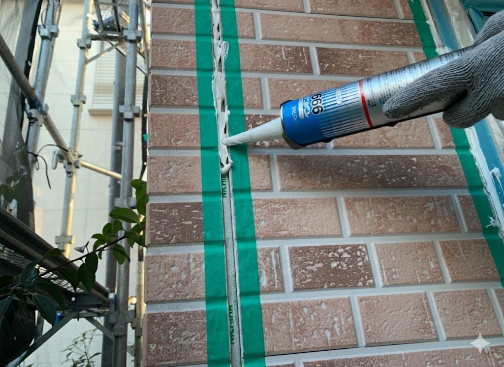
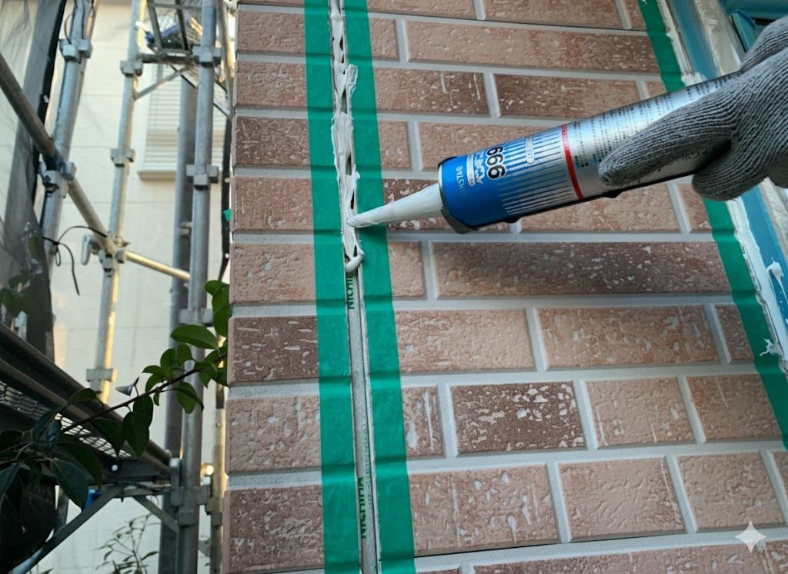
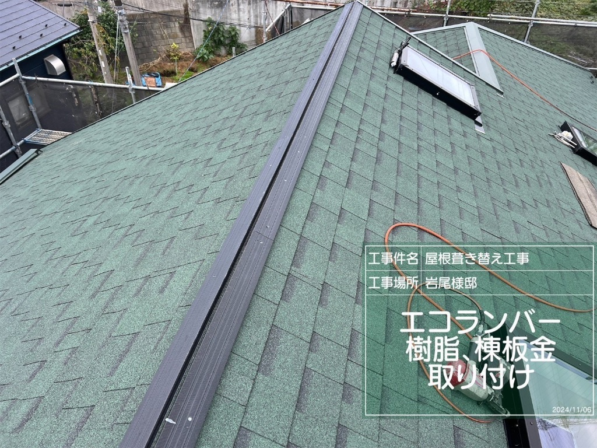
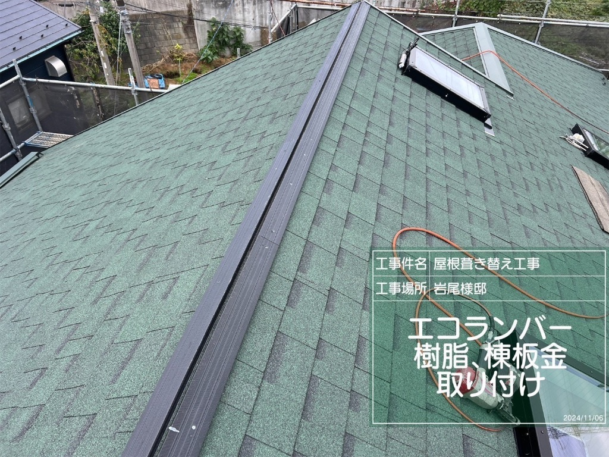

「本当に直るのか？」「費用は適正なのか？」
📸 施工事例（全23件）
同じような不安を抱えていたお客様が、どのように解決したのかをご覧ください。
訪問販売の半額以下で適正価格で修理した実例も多数あります。
⚠️ 訪問販売と適正価格の違いに注目してください
🔍 地域で探す
または
表示中：23件
事例1: 天井のシミ→屋根板金劣化
横浜市青葉区 T様
施工前

施工後

施工過程


❌ 症状
2階天井にコーヒー色のシミ。雨の日にポタポタ音。
🔍 原因
屋根の棟板金の釘が浮いて隙間から雨水侵入。
✅ 工事内容
屋根新設工事・下地新設・防水シート貼り直し
💴 費用
420万円
⏰ 工期: 15日間
✨ ポイント
屋根全体を完全新設。30年以上の耐久性を実現。
💬 お客様の声
「屋根全体の劣化が進んでいたため、完全新設に。丁寧な工事で安心しました。」
⚡ 訪問販売 480万円 → 当社 260万円（220万円削減！）
事例2: 瓦のずれ・漆喰劣化
川崎市麻生区 M様
施工前

施工後

施工過程


❌ 症状
瓦のずれと漆喰の劣化で雨漏り
🔍 原因
長期の点検をしていなかった
✅ 工事内容
屋根壁塗り替え
訪問販売の見積もり
480万円
💴 適正価格
260万円
220万円削減！ ⏰ 工期: 11日間
⚠️ ポイント
訪問販売では不要な外壁全面塗装も含まれていました。必要な部分だけ施工。
💬 お客様の声
「訪問販売と比較して220万円も安く、適正価格で安心できた。」
事例3: サイディングからの雨漏り
相模原市南区 K様
施工前

施工後

施工過程


❌ 症状
サイディングが水を含み、内部にカビや雨漏りが発生
🔍 原因
サイディングとコーキング劣化
✅ 工事内容
サイディング張替え・コーキング
💴 費用
81万円
⏰ 工期: 7日間
✨ ポイント
オンライン診断で訪問なし。写真と動画で事前診断。
💬 お客様の声
「オンライン診断で事前に原因がわかり、安心して依頼できた。」
事例4: 屋根からの雨漏り
町田市 I様
施工前
施工後

施工過程
❌ 症状
屋根の劣化で雨漏りが発生
🔍 原因
屋根の劣化
✅ 工事内容
屋根部分張替・天井部分補修
💴 費用
78万円
⏰ 工期: 5日間
✨ ポイント
急な対応でもすぐ施工。緊急の雨漏りにも迅速対応。
💬 お客様の声
「急な対応にもかかわらず、すぐに施工していただき有難うございます。」
事例5: サイディング張替
東京都日野市 M様
施工前
施工後

施工過程

❌ 症状
コーキングの劣化からサイディングの腐食
🔍 原因
コーキングの劣化からの雨漏り
✅ 工事内容
サイディング部分新設
💴 費用
78万円
⏰ 工期: 3日間
✨ ポイント
部分新設で費用を抑え、3日間の短期間施工を実現。
💬 お客様の声
「コーキングの劣化に気づかず放置していたが、早めに対応してもらえて良かった。部分新設で費用も抑えられました。」
事例6: 雨樋新設
東京都町田市 K様
完成外観
施工後
施工過程
❌ 症状
横樋が真ん中に水がたまる
🔍 原因
長年の金具の痛みによる勾配が変わってしまった
✅ 工事内容
雨樋新設
💴 費用
48万円
⏰ 工期: 3日間
✨ ポイント
勾配を正しく調整し、雨樋全体を新設。長期的な耐久性を確保。
💬 お客様の声
「横樋に水が溜まって困っていたが、勾配を調整して雨樋を新設してもらい、雨水がスムーズに流れるようになりました。」
事例7: 屋根カバー工法
カバー工法 築27年📍 横浜市青葉区 U様

施工前

施工後
施工中

作業詳細
完成間近
❌ 症状
板金の中にある抜き板の腐食
🔍 原因
経年劣化
✅ 工事内容
屋根カバー工法
💴 費用
168万円
⏰ 工期: 7日間
✨ ポイント
カバー工法で既存屋根を残し、費用と工期を抑えた施工。
💬 お客様の声
「板金の中の抜き板が腐食していたとは知りませんでした。カバー工法で既存屋根を残し、費用も抑えられて助かりました。」
事例8: 屋根カバー工法・天井張り替え
屋根カバー工法 築31年📍 東京都稲城市 M様

施工後

天井被害
天井補修

完成
❌ 症状
瓦屋根からの雨漏り
🔍 原因
屋根の点検をしたことがなかった
✅ 工事内容
屋根カバー工法・天井張り替え
💴 費用
230万円
⏰ 工期: 11日間
✨ ポイント
築31年で初めての点検。瓦屋根をカバー工法で新設し、天井張り替えで根本から解決。
💬 お客様の声
「一度も点検をしたことがなく、雨漏りが発生してしまいました。屋根カバー工法と天井の張り替えで、根本から解決していただきました。」
事例9: 瓦差し替え
訪問販売と比較 築22年📍 東京都八王子市 N様
施工前（瓦の割れ）
施工後（瓦交換完了）
❌ 症状
瓦の割れを訪問販売会社に指摘された
🔍 原因
経年劣化（雨漏りはなし）
✅ 工事内容
瓦差し替え工事
💴 費用
3万円
⏰ 工期: 1日間
✨ ポイント
訪問販売の高額見積もりを避け、必要最小限の瓦差し替えで3万円。1日で完了。
💬 お客様の声
「訪問販売会社に瓦の割れを指摘され不安でしたが、必要な部分だけ差し替えで3万円で済みました。雨漏りもなく、安心できました。」
⚡ 訪問販売 380万円 → 当社 58万円（322万円削減！）
事例10: 柱継ぎ工事
訪問販売と比較 緊急対応 築23年📍 神奈川県横浜市青葉区 H様
施工前：柱・土台の腐食

施工中：解体・柱継ぎ作業
施工後：柱継ぎ完了
❌ 症状
柱周辺から水が回ってしまう。床がぶよぶよと沈む感触。
🔍 原因
長期の雨漏りとシロアリ被害により、柱と土台が腐食。構造強度が低下。
✅ 工事内容
施工部周りを慎重に解体し、柱を部分的に新設。防腐処理とシロアリ対策を実施。
💴 費用
58万円
⏰ 工期: 7日間
訪問販売: 380万円
✨ ポイント
訪問販売会社は「家全体の建て替えが必要」と提案したが、実際は柱の部分交換のみで解決。築23年の家の寿命を30年以上延長できました。
💬 お客様の声
「訪問販売会社に380万円と言われて途方に暮れていました。柱の部分交換だけで済むと聞いて本当に助かりました。322万円も節約できて、家族の将来設計が守られました。」
事例11: 屋根・外壁塗装（築30年メンテナンス）
東京都日野市 K様
施工前（足場設置中）

施工後
施工詳細
❌ 症状
雨漏り点検を依頼されたが、雨漏りは発生していなかった。ただし築30年経過により、屋根・外壁の塗装が劣化（色褪せ・チョーキング現象・防水性能低下）。
🔍 原因
築30年の経年劣化。雨漏りはないが、予防メンテナンスのタイミング。塗装の防水性能が低下しており、放置すると雨漏りリスクが高まる状態。
✅ 工事内容
屋根塗装・外壁塗装・雨樋塗装・窓枠塗装・ベランダ防水塗装・軒天塗装・高圧洗浄・下地処理（高耐久シリコン塗料使用）
💴 費用
180万円
⏰ 工期: 20日間
✨ ポイント
雨漏り点検から予防メンテナンスへ提案。築30年の適切なタイミングで塗装。屋根・外壁・ベランダを一度に施工し足場費用を効率化。高耐久シリコン塗料で10〜15年の耐久性を確保。
💬 お客様の声
「雨漏り点検をお願いしましたが、雨漏りはなく安心しました。ただ、築30年でかなり劣化していると聞き、予防のために塗装工事をお願いしました。足場を組むなら一緒に全部やった方が良いとアドバイスをいただき、屋根・外壁・ベランダを全て塗装してもらいました。新築のように生まれ変わり、大満足です！」
事例12: コーキング撤去打ち替え
東京都多摩市 S様
施工前
施工後
施工過程
 

❌ 症状
外壁のサイディングボード目地のコーキングが切れて隙間ができていた。雨水が内部に侵入する危険性があった。
🔍 原因
築14年の経年劣化により、紫外線や温度変化でコーキング材が硬化・収縮し、ひび割れが発生。
✅ 工事内容
古いコーキングの完全撤去・プライマー塗布・高品質シーリング材での打ち替え
💴 費用
35万円
⏰ 工期: 3日間
✨ ポイント
オンライン診断で写真から的確に判断。古いコーキングを完全撤去してから高品質材料で打ち替え。10年以上の耐久性を確保。
💬 お客様の声
「オンライン診断で写真を送っただけで正確に見積もりが出ました。訪問不要で手軽に依頼できて、仕上がりも大満足です。」
事例13: 築20年の屋根全面葺き替え
東京都町田市 I様
施工前（剥がし中）

施工後

施工過程

 

❌ 症状
訪問販売会社に旧屋根（スレート）の劣化を指摘された。築20年経過により、ひび割れや欠損が複数箇所で発生していた。
🔍 原因
築20年の経年劣化。スレート屋根材の防水性能低下により、雨水が侵入するリスクが高まっていた。
✅ 工事内容
既存屋根材の全撤去・野地板点検・防水シート全面張り替え・アスファルトシングル材施工・エコランバー樹脂と棟板金取り付け・天窓周辺防水処理
💴 費用
200万円
⏰ 工期: 10日間
✨ ポイント
訪問販売会社はカバー工法を勧めたが、当社に相談し葺き替えを選択。天窓が複数あるため防水処理を入念に実施。アスファルトシングル材は軽量で耐久性が高く、30年以上の寿命が期待できる。
💬 お客様の声
「訪問販売会社からはカバー工法を勧められましたが、金額は少し高くなっても新しい屋根を作ってもらいたいと思い、こちらに相談しました。葺き替えにして正解でした。築20年の家が新築のように生まれ変わり、これで安心して暮らせます。」
事例14: 屋根・外壁塗装工事（築36年・予防メンテナンス）
東京都稲城市 U様
施工前
施工後
施工詳細
❌ 症状
築36年が経過し外壁や屋根の劣化が気になり点検を依頼。雨漏りは発生していないが、塗装の劣化（色褪せ・チョーキング現象・ひび割れ）が進行。
🔍 原因
築36年の経年劣化。雨漏りはないが、予防メンテナンスのタイミング。塗装の防水性能が低下しており、放置すると雨漏りリスクが高まる状態。
✅ 工事内容
屋根塗装・外壁塗装・木部塗装・鉄部塗装・全体高圧洗浄・下地処理・ひび割れ補修（高耐久シリコン塗料使用）
💴 費用
135万円
⏰ 工期: 20日間
✨ ポイント
築36年の適切なタイミングでの予防メンテナンス。雨漏り原因なし。屋根・外壁を一度に施工し足場費用を効率化。和風住宅の雰囲気を保ったまま美しく仕上げ。高耐久シリコン塗料で10〜15年の耐久性を確保。
💬 お客様の声
「築36年でかなり古くなっていましたが、雨漏りがないうちに予防メンテナンスをしたいと思い依頼しました。屋根と外壁を一緒に塗装してもらい、まるで新築のようになりました。費用も135万円で済んで、想定よりも安く抑えられて満足です。」
事例15: 屋根・外壁塗装工事（築25年・コーキング劣化対応）
東京都調布市 T様
施工前
施工後
施工詳細
❌ 症状
築25年が経過し、外壁サイディングの目地コーキングが劣化（ひび割れ・剥がれ）。雨水の侵入リスクがある状態。屋根塗装も色褪せ・チョーキング現象が発生。
🔍 原因
築25年の経年劣化によるコーキング材の硬化・収縮。紫外線・温度変化の影響でコーキングがひび割れ、隙間が発生。放置すると雨漏りリスクが高まる。
✅ 工事内容
外壁コーキング撤去・打ち替え・外壁塗装・屋根塗装・雨樋塗装・破風板塗装・全体高圧洗浄・下地処理（高耐久シリコン塗料使用）
💴 費用
134万円
⏰ 工期: 20日間
✨ ポイント
コーキング劣化から外壁塗装を提案。足場があるため屋根塗装も一緒に施工し、費用を効率化。高耐久シリコン塗料で10〜15年の耐久性を確保。外壁・屋根・付帯部を同時施工で統一感のある仕上がり。
💬 お客様の声
「外壁のコーキングが劣化していることに気づき、点検を依頼しました。せっかく足場を組むなら屋根も一緒に塗装した方が良いとアドバイスをいただき、まとめて工事をお願いしました。134万円で屋根も外壁も新築のように綺麗になり、大変満足しています！」
事例16: 屋根・外壁塗装工事（築27年・訪問販売比較で230万円削減）
東京都町田市 R様
施工前
施工後
施工詳細
❌ 症状
訪問販売会社から「外壁と屋根が劣化している」との指摘。築27年が経過し、外壁の色褪せ・チョーキング現象、屋根の劣化が確認された。
🔍 原因
築27年の経年劣化。訪問販売から390万円の高額見積を提示されたが、当社で点検した結果、適正な工事内容で160万円に抑えることができた。
✅ 工事内容
屋根塗装・外壁塗装・雨樋塗装・破風板塗装・全体高圧洗浄・下地処理・ひび割れ補修（高耐久シリコン塗料使用）
💰 訪問販売との価格比較
❌ 訪問販売見積
390万円
✅ 当社見積
160万円
🎉 削減額: 230万円！
💴 費用
160万円
⏰ 工期: 20日間
✨ ポイント
訪問販売の高額見積（390万円）に不安を感じ、セカンドオピニオンとして当社に依頼。適正価格で160万円に抑え、230万円の削減に成功。高耐久シリコン塗料で10〜15年の耐久性を確保。
💬 お客様の声
「訪問販売で390万円と言われて驚きました。念のため他社に相談したところ、160万円で同じ工事ができると聞いて即決。230万円も節約できて、家族旅行に行けました。丁寧な工事で仕上がりも満足です！」
事例17: ベランダ防水改修工事（築18年・ひび割れ補修）
神奈川県横浜市港北区 T様
 Before
Before
 After
After
❌ 症状
築18年でベランダ床面に複数のひび割れが発生。防水層劣化により雨水浸入のリスク。
🔍 原因
経年劣化によりウレタン防水層が硬化・収縮。紫外線と温度変化で防水性能が低下。
✅ 工事内容
既存防水層撤去・ひび割れ補修・プライマー塗布・ウレタン防水層施工・トップコート仕上げ
💴 費用
35万円
⏰ 工期: 3日間
✨ ポイント
ベランダのひび割れを早期発見し、雨漏り前に予防メンテナンス。ウレタン防水で10年以上の耐久性を確保。
💬 お客様の声
「ベランダのひび割れが気になり、点検してもらいました。3日間で綺麗に仕上がり、35万円で済んで満足です！」
事例18: 軒交換（築37年・老朽化対応）
神奈川県横浜市青葉区 S様
⚠️ 症状
- ● 軒天井の老朽化: 築37年による経年劣化で、軒天井の塗装が剥がれ、木部が腐食し始めていた
- ● 雨水の染み込み: 軒天井のひび割れから雨水が染み込み、内部の木材が湿気を含んでいた
- ● 外観の劣化: 軒天井の変色や汚れが目立ち、建物の外観を損なっていた
🔍 原因
築37年という長期間の経年劣化により、軒天井の塗装保護層が失われ、木材が直接紫外線や雨水にさらされた結果、腐食が進行。 軒は屋根の下で雨や風の影響を直接受けやすい部位のため、定期的なメンテナンスが必要だが、長年放置されていたことが原因。
🔧 施工内容
-
1.
既存軒天井の撤去: 腐食した軒天井の木材を慎重に撤去し、内部の状態を確認
-
2.
下地の補修: 軒裏の下地木材の腐食部分を補修し、防腐処理を実施
-
3.
新規軒天井の設置: 耐久性の高いケイカル板（ケイ酸カルシウム板）を使用して新しい軒天井を設置
-
4.
塗装仕上げ: 外壁色に合わせた塗装を施し、外観を統一
-
5.
防水処理: 軒天井と外壁の接合部に防水処理を施し、雨水の侵入を防止
💴 費用
27万円
⏰ 工期: 4日間
✨ ポイント
築37年の軒天井の老朽化に対応。腐食した木材を撤去し、耐久性の高いケイカル板で交換。防腐・防水処理を施し、今後10〜15年の耐久性を確保。工期4日間で完了し、外観も美しく仕上がりました。
💬 お客様の声
「軒天井の劣化が気になっていましたが、どこに頼めばいいか分からず放置していました。丁寧に点検してもらい、4日間で綺麗に交換してもらえて満足です。27万円という費用も適正だと感じました。」
事例19: 雨樋・軒交換（築31年・老朽化対応）
神奈川県川崎市麻生区 S様
施工中
After
⚠️ 症状
- ● 雨樋の老朽化: 築31年の経年劣化で、雨樋が変形・ひび割れし、雨水が溢れていた
- ● 軒天井の腐食: 雨樋からの雨水が軒天井に流れ込み、木材が腐食し始めていた
- ● 外壁への影響: 溢れた雨水が外壁を伝い、シミや汚れが発生していた
🔍 原因
築31年という長期間、雨樋のメンテナンスを行っていなかったため、紫外線や雨水による劣化が進行。 雨樋の変形により雨水が適切に排水されず、軒天井に流れ込んで木材の腐食を引き起こしていた。 特に、雨樋の継ぎ目部分のシーリングが劣化し、そこから雨水が漏れていたことが主な原因。
🔧 施工内容
-
1.
既存雨樋の撤去: 老朽化した雨樋を全て撤去し、内部の状態を確認
-
2.
軒天井の補修: 腐食した軒天井の木材を交換し、防腐処理を実施
-
3.
新規雨樋の設置: 耐久性の高いガルバリウム鋼板製の雨樋を設置
-
4.
継ぎ目の防水処理: 雨樋の継ぎ目部分にシーリング処理を施し、雨水の漏れを防止
-
5.
排水テスト: 雨樋に水を流して排水状況を確認し、問題がないことを確認
💴 費用
43万円
⏰ 工期: 4日間
✨ ポイント
築31年の雨樋と軒天井を同時に交換。雨樋の老朽化により軒天井が腐食していたため、両方を一度に施工することでコストを抑えました。耐久性の高いガルバリウム鋼板製の雨樋を使用し、今後15〜20年の耐久性を確保。
💬 お客様の声
「雨が降るたびに雨樋から水が溢れて困っていました。点検してもらったら軒天井も腐食していることが分かり、一緒に交換してもらいました。4日間で綺麗に仕上がり、43万円で済んで安心しました。」
事例20: 棟板金交換（築11年・釘抜け対応）
神奈川県横浜市都筑区 K様
⚠️ 症状
- ● 棟板金の釘抜け: 築11年の経年劣化で、棟板金を固定する釘が抜けて浮いていた
- ● 強風時の騒音: 釘抜けにより棟板金が風で浮き、強風時にバタバタと音がしていた
- ● 飛散リスク: このまま放置すると台風時に棟板金が飛散する危険性があった
🔍 原因
築11年で棟板金の釘が抜けた原因は、紫外線や雨水による木材下地の劣化と、温度変化による金属の膨張・収縮。 棟板金は屋根の頂上にあるため、直射日光を最も受けやすく、木材下地が乾燥・収縮して釘が効かなくなっていた。 また、従来の釘打ち工法は10〜15年で釘が抜ける傾向があり、早めの交換が推奨される箇所。
🔧 施工内容
-
1.
既存棟板金の撤去: 古い棟板金と釘を全て撤去し、下地の木材（貫板）の状態を確認
-
2.
下地の交換: 劣化した木材下地（貫板）を耐久性の高い樹脂製下地（タフモック）に交換
-
3.
新規棟板金の設置: 耐久性の高いガルバリウム鋼板製の棟板金を設置
-
4.
ビス固定: 従来の釘ではなく、抜けにくいステンレス製のビスで固定
-
5.
防水処理: 継ぎ目部分にシーリング処理を施し、雨水の侵入を防止
💴 費用
38万円
⏰ 工期: 4日間
✨ ポイント
インターネットから連絡をいただき、点検で釘抜けを発見。屋根材自体は劣化していなかったため、棟板金のみの交換を提案し、費用を抑えました。樹脂製下地＋ビス固定で今後20年以上の耐久性を確保。
💬 お客様の声
「インターネットで調べて連絡しました。点検で釘抜けが見つかり、台風前に直せて良かったです。屋根全体を交換すると思っていましたが、板金だけで済んで38万円に抑えられて助かりました。」
事例21: 下屋からの雨漏り・床全面改修（築38年）
東京都町田市 M様
⚡ 台風当日に緊急対応！ブルーシート処置 → 即日施工開始
 天井被害
天井被害
❌ 症状
台風当日、下屋（1階部分の屋根）から雨漏りが発生。1階の半分が浸水し、床・壁・天井が全て水浸しになり、生活困難な状態に。
🔍 原因
築38年で下屋の防水層が劣化。台風の強風で瓦がズレて雨水が大量に侵入。下地も腐食しており、大規模な改修が必要な状態だった。
✅ 工事内容
下屋屋根全面改修・床全撤去・下地補修・断熱材施工・新規フローリング・壁紙張替え・天井改修
💴 費用
428万円
⏰ 工期: 1か月10日間
✨ ポイント
台風当日に連絡を受け、即日ブルーシートで応急処置。生活が困難な状況だったため、すぐに施工を開始。屋根・床・壁・天井すべてを改修し、1か月10日で完全復旧。
💬 お客様の声
「台風当日に雨が漏ってしまい、連絡したらすぐに駆け付け、ブルーシートで対応してくれました。その後も生活が難しいところを、すぐに施工にしてくれて本当に助かりました。」
事例22: 瓦葺き直し（築48年・下地全面改修）
神奈川県横浜市青葉区 A様
 下地劣化
下地劣化
 After
After
After
After
⚠️ 症状
- ● 瓦のズレ・浮き: 築48年の経年劣化で、瓦がズレて浮いている箇所が多数あった
- ● 下地の腐食: 瓦を剥がしたところ、コンパネ（下地合板）だけでなく、野地板や垂木まで劣化が進行していた
- ● 雨漏りリスク: 下地の劣化により、雨水が屋内に侵入するリスクが非常に高い状態だった
🔍 原因
築48年という長期間、屋根のメンテナンスを行っていなかったため、瓦の下の防水シートや下地木材が劣化。 特に、コンパネ（下地合板）が湿気を含んで腐食し、野地板や垂木まで劣化が進んでいた。 瓦自体は耐久性が高いが、下地の劣化により瓦がズレ、雨水が侵入しやすい状態になっていた。
🔧 施工内容
-
1.
既存瓦の撤去: 全ての瓦を慎重に取り外し、再利用可能な瓦を選別
-
2.
下地の全面改修: 劣化したコンパネ・野地板・垂木を全て撤去し、新しい木材で下地を組み直し
-
3.
防水シート施工: 高品質な防水シート（改質アスファルトルーフィング）を全面に敷設
-
4.
瓦の葺き直し: 再利用可能な瓦を使用して、丁寧に葺き直し
-
5.
強化棟の設置: 棟部分には、木材を金具で固定する「強化棟」を採用し、地震対策を実施
💴 費用
297万円
⏰ 工期: 16日間
✨ ポイント
インターネットから連絡をいただき、点検で下地の劣化を発見。瓦を剥がしたところ、コンパネだけでなく野地板・垂木まで劣化していたため、下地を全面的に組み直し。強化棟で地震対策も実施し、今後30年以上の耐久性を確保。
💬 お客様の声
「築48年で屋根が心配だったので、インターネットで調べて連絡しました。瓦を剥がしたら下地が想像以上に劣化していて驚きましたが、全面的に組み直してもらい安心しました。297万円は高額でしたが、これで30年以上安心して暮らせます。」
事例23: サッシ水漏れ対応・コーキング打ち替え＋塗装工事
川崎市麻生区 N様
施工前
施工後
施工過程
❌ 症状
サッシ周辺から水漏れ。外壁のコーキングが劣化し、塗装も色褪せが目立つ状態。
🔍 原因
築15年でコーキングが劣化し、サッシ周辺の防水性能が低下。塗装も経年劣化で保護機能が失われていた。
✅ 工事内容
コーキング全面打ち替え・外壁塗装（下塗り・中塗り・上塗り3回塗り）
💴 費用
130万円
⏰ 工期: 10日間
✨ ポイント
サッシ周辺のコーキングを全て打ち替え、外壁塗装で保護機能を回復。今後10年以上の耐久性を確保。
💬 お客様の声
「サッシからの水漏れが心配でしたが、コーキングを全て打ち替えてもらい安心しました。塗装も綺麗になり、新築のようです。」